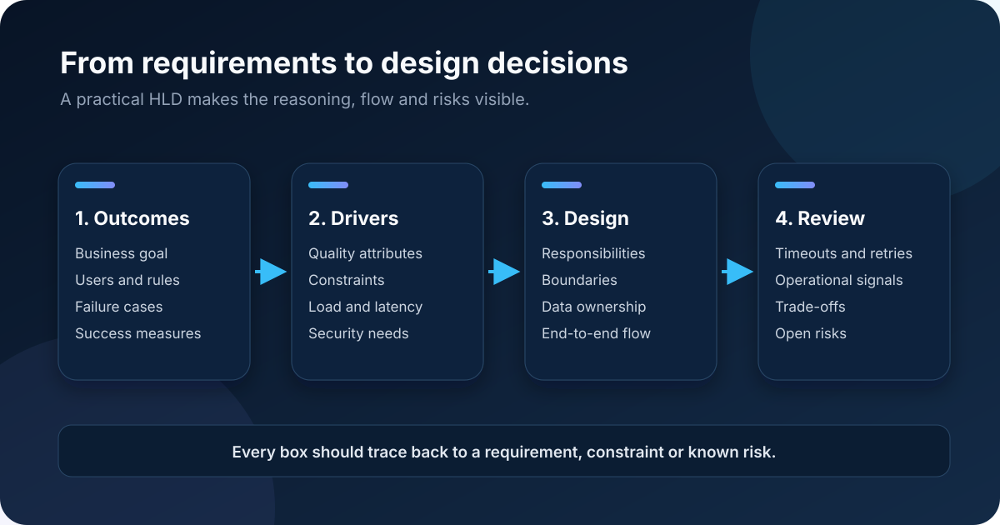

The use case and constraints
A high-level design is useful when it turns unclear requirements into decisions that a team can discuss. It is not useful when it is only a collection of boxes with impressive labels. The goal is not to predict every class or database column. The goal is to agree on the shape of the solution before implementation makes important decisions expensive to change.
This note describes a repeatable way to move from requirements to a practical HLD without overdesigning the system.

Begin with the outcome
The first question is not which technology to use. It is what outcome the system must produce.
Suppose the requirement says that customers can submit orders and receive confirmation. That sentence is a starting point rather than a design. Useful follow-up questions include:
- Who can submit an order?
- What information makes an order valid?
- Must confirmation be immediate?
- What happens if payment or inventory is unavailable?
- Can the same request be submitted twice?
- Which actions must be traceable later?
These questions expose business rules and failure conditions. They also prevent the design from being driven by an assumed happy path.
Identify the quality attributes
Functional requirements describe what the system does. Quality attributes describe how well it must do it. They often influence architecture more strongly than the feature list.
Examples include availability, response time, throughput, security, auditability, consistency, and recovery time. A service handling a few internal requests each hour needs a different design from a public API handling thousands of requests each second. A financial operation may prefer strong consistency while an analytics dashboard may accept slightly delayed data.
Write the important qualities in measurable language where possible. “The system should be fast” is difficult to design for. “Most requests should complete within 500 milliseconds under the expected load” gives the team something concrete to examine and test.
Record constraints before choosing components
Every design operates inside constraints. The team may need to use an existing identity provider or database. Data may need to remain in a particular region. The organization may already operate a message broker. Delivery time and team experience are also real constraints.
Constraints should be documented rather than hidden inside a diagram. This prevents a future reviewer from treating a deliberate compromise as an accidental mistake.
It also helps separate facts from preferences. “The platform supports PostgreSQL” is a constraint. “I prefer a document database” is a preference and still needs justification.
Define boundaries and responsibilities
Now identify the major responsibilities in the system. For an order flow they might include accepting requests, validating orders, reserving inventory, processing payment, persisting state, and notifying the customer.
Do not immediately turn every responsibility into a separate microservice. First decide which responsibilities need independent ownership, scaling, security, or deployment. A modular application may be the simplest good solution. Service boundaries should follow meaningful operational or business boundaries rather than individual database tables.
For each component describe:
- What it owns
- What requests it accepts
- What data it reads or changes
- Which dependencies it calls
- What it returns when successful
- How it reports failure
This short description is usually more valuable than a box name alone.
Walk through the flow end to end
A component diagram shows structure but not time. Add one or two sequence flows for the most important scenarios. Include the normal path and at least one failure path.
For example, an order request might be accepted synchronously and placed on a queue for processing. The API can return a tracking identifier while a worker completes inventory and payment steps. This design changes the user experience and creates new responsibilities: request status, retries, duplicate protection, and failure visibility.
Drawing the flow makes those consequences visible. It also reveals where timeouts and partial failures can occur.
Make data ownership explicit
An HLD should identify the important data stores and the component responsible for changing each type of data. Shared databases can create hidden coupling because several components can modify the same records without a clear contract.
Also document consistency expectations. If an order is confirmed before a reporting database is updated, that delay may be acceptable. If inventory can be oversold during the delay, it may not be acceptable. The design should say which trade-off is intended.
Avoid specifying every table at this stage. Capture the main entities, ownership, retention requirements, and movement of sensitive data.
Consider security and operational trade-offs
Reliable systems are defined as much by failure behavior as by successful behavior. Ask what happens when every external dependency is slow, unavailable, or returns an uncertain result.
Important decisions include timeout limits, retry policies, idempotency, dead-letter handling, compensation, and operator alerts. Retrying every failure is dangerous. A retry can duplicate an operation and can increase load on a struggling dependency. The design must distinguish temporary failures from permanent validation problems.
Operational visibility belongs in the HLD too. Logs, metrics, traces, and correlation identifiers are not decorations added after implementation. They are part of making the system supportable.
Capture decisions and unresolved risks
A practical HLD does not pretend that every answer is known. Keep a small decision list containing the choice, reason, alternatives, and consequences. Keep a separate list of open questions and risks with an owner or next action.
This makes review more productive. Reviewers can challenge an actual decision instead of guessing why a technology appeared in the diagram.
Questions before implementation
- Does it connect components to real requirements?
- Are the most important quality attributes measurable?
- Are system boundaries and data owners clear?
- Are normal and failure flows shown?
- Are security and sensitive data considered?
- Are retries and duplicate operations addressed?
- Can operators detect and investigate failures?
- Are major trade-offs and unanswered questions recorded?
A good high-level design creates shared understanding. It should be detailed enough to expose costly assumptions and simple enough that developers and stakeholders can discuss it together. The best sign of success is not the number of boxes. It is that the team knows what it is building and why.
What to remember
- Start with outcomes and measurable qualities rather than technology.
- Make ownership, failure behavior, and trade-offs visible.
- Keep the design simple enough for the whole team to review.